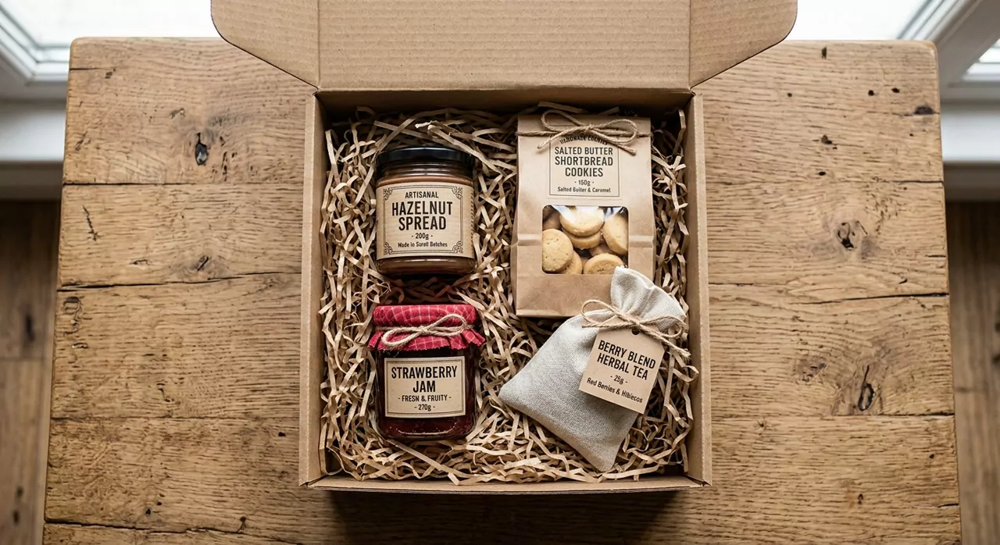

Confiture, sablés, thé noir : on ferme la boîte et on noue la ficelle
Je m'appelle Charlotte Bon Goût. Je remplis chaque coffret moi-même, pot par pot, avec les produits de six producteurs que je connais par leur prénom.

Une seule personne derrière chaque boîte

Avant d'en faire mon métier, je préparais déjà ces paniers pour mes proches : un tour au marché le samedi, trois ou quatre arrêts chez les producteurs du coin, et une boîte à offrir le soir même.
Aujourd'hui c'est pareil, en un peu plus grand. Je goûte tout avant de le mettre dans un coffret. Si je ne le rachèterais pas pour ma propre cuisine, il n'y entre pas.
Vous voulez savoir qui fait vos confitures ? Leurs noms, leurs horaires et leurs produits sont sur la page Producteurs partenaires.
L'ambiance du marché du samedi matin, là où je retrouve mes producteurs :
Les 5 coffrets
| Coffret | Contenu | Prix |
|---|---|---|
| Petit Déjeuner | Confiture d'abricot, granola bio, thé noir, sablés | 29 € |
| Déjeuner | Lentilles mijotées, tartinade de poivrons, huile de noix, vinaigre de cidre | 39 € |
| Goûter | Pâte à tartiner, sablés au beurre salé, confiture de fraise | 24 € |
| Anniversaire | Six produits, un ruban rouge et une carte écrite à la main | 45 € |
| Surprise | Six produits de saison : je choisis, vous ouvrez | 34 € |
Infos pratiques
- Préparation : sous 3 jours ouvrés, à la main.
- Livraison : Colissimo, 6,90 €. Offerte dès 60 €.
- La carte : votre message est recopié à la main. Offert.
- Emballage : carton kraft, papier froissé, ficelle en coton. Zéro plastique.